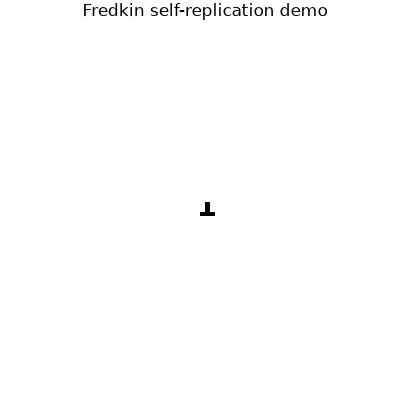
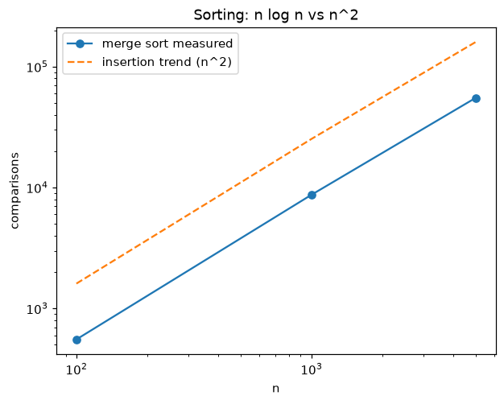
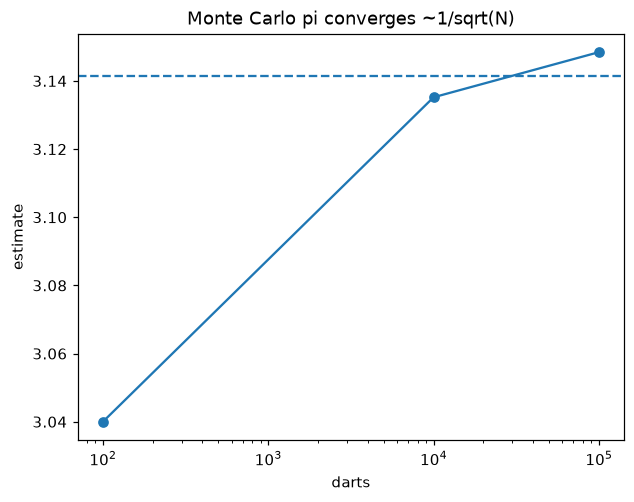
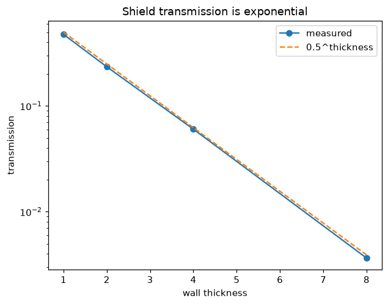
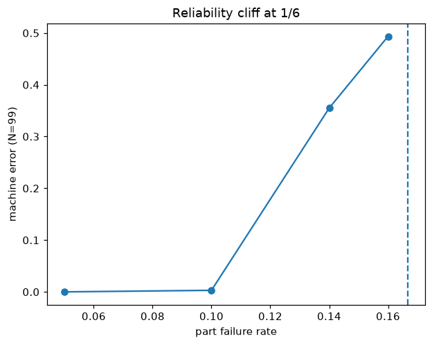
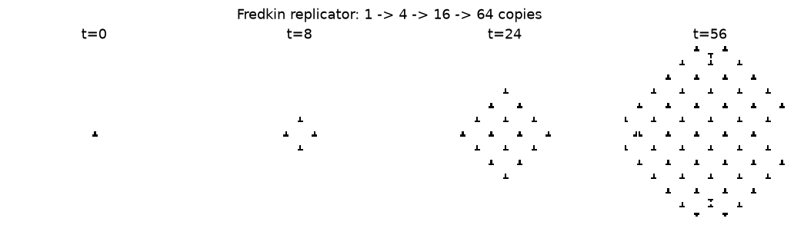

🎥 Demo (60 seconds)

GIF plays in the README; MP4 with sound-free player plays here on GitHub Pages (correct MIME). Both regenerate via scripts/make_media.py.
🌱 Beginner guide — zero to professional
Let's work this out in a step-by-step way to be sure we have the right answer. Each row is one idea, one picture, one file:
| # | Idea in one line | File → try it |
|---|---|---|
| 1 | Tic-tac-toe: assume the opponent hurts you most, pick the best of that. | minimax.py → empty board = draw |
| 2 | Penalty: fixed habits lose; roll dice with exact odds (38/42 %). | mixed.py → value 79.6 |
| 3 | Computer: instructions are numbers; the program rewrites itself. | machine.py → 63 in 55 steps |
| 4 | Sort: merge small sorted piles upward; 29× faster. | sorting.py |
| 5 | Dice: darts → π; neutrons → shields; money → prices. | montecarlo.py |
| 6 | Random-ish: recipes collapse; biased coins can be debiased. | randomness.py |
| 7 | Redundancy: vote in threes; cliff at 1 failure in 6. | reliable.py |
| 8 | Copy: use the description twice; V → 4 → 16 → 64. | selfrep.py |
📸 Measured evidence

n log n vs n²

Dice → π ≈ 3.148

Shield ≈ 0.5^thickness

Cliff at 1/6

🎯 Interactive quiz — from scratch to pro (8 questions)
Answer all eight. Explanations appear step by step; score ≥ 7 = Professional.
🚀 Run it yourself
git clone https://github.com/YOUR-USER/von-neumann-8-ideas-verify-phd-2026.git cd von-neumann-8-ideas-verify-phd-2026 pip install -r requirements.txt pytest -q python scripts/run_all.py # → results/results.json docker compose up --build
Publish this page: Settings → Pages → Deploy from a branch → main + /docs → Save.
🧑💻 What you can use this for
- Learn: one file per idea, 12 tests define "correct".
- Teach: 1 idea/week + quiz for grading.
- Interview prep: minimax, n log n, 1/√N, PRNG, thresholds — with runnable answers.
- Build: VM harness, counted sorts, GBM Monte Carlo, debiasing as templates.
- Puzzle:
data/mystery.txtcomputes…? (answer: 2¹⁰ = 1024).